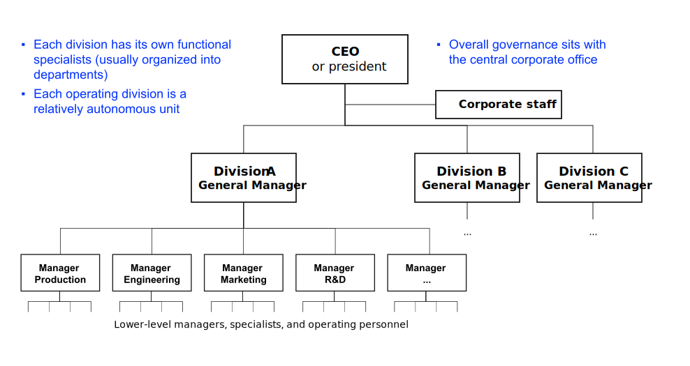

Structure
How to match a firm’s structure with its strategy?
Neu-Ulm University of Applied Sciences
September 3, 2024
Learning outcomes
After this session, you should have a solid understanding of
- the need to match a firm’s structure with its strategy;
- different types of organizational structure;
- advantages and disadvantages of these types of structures;
- key strategic issues related to CDO/CIO roles;
- the concept of (structural) ambidexterity and how it relates to CDO/CIO roles;
- as well as the need for and characteristics of periods of convergence and upheaval.
Prologue
Changes in strategy often require changes in the way an organization is structured, for two major reasons. First, structure largely dictates how objectives and policies will be established [..] The second major reason [..] is that structure dictates how resources will be allocated. David and David (2016) *[p. 329-330*]
Organizational alignment
Definition
Powell (1992) defines organizational alignment as the coherence among various components within an organization, including structure, processes, culture, and strategies.
Efects
Firms with a high degree of alignment are better equipped to adapt to changes in their external environment, are more resilient to threats and better able to capitalize on emerging opportunities (Powell 1992).
Components
Powell (1992) identifies four dimensions of organizational alignment that significantly relate to profitability:
Internal structural fit, size-structure fit, size-planning components fit, and locus of control.
Whereas structural fit seems to be the most significant source of competetive advantage.
7s Framework
Reflection
Form small groups of 3 to 4 students. Discuss your findings from listening to the Decoder Episode with Philips CEO Roy Jakobs and discuss and summarize what you have learned about organizational alignment at Philips.
Your summary must include the following points:
- An overview of how Philips has strategically pivoted.
- A description of the company’s operational model.
- The advantages and disadvantages of this model, particularly considering speficics of the healthcare context.
Organizational structures
Simple structure


Functional structure


Divisional structure


Matrix structure


Growth patterns of large companies


Excursus: CIO/CDO
Reflection
Form small groups of 3 to 4 students. Discuss your findings from reading Lorenz and Buchwald (2023). Create a presentation that summarises the key findings. Each presentation should last 5 minutes.
Your summary must include the following considerations:
- the roles of CDO and CIO,
- strategic reasons for introducing a CDO role,
- the dynamics and challenges related to the relationship between CDOs and CIOs,
- (structural) ambidexterity in relation to the roles of CIO and CDO,
- and recommendations for the design and implementation of organisational structures that efficiently support digital transformation.
Roles
The Chief Information Officer (CIO) traditionally leads the IT department, ensuring technology infrastructure supports organizational goals. They manage data, information systems, and IT operations as well as they address cybersecurity, data privacy, and compliance with IT regulations.
The Chief Digital Officer (CDO) is responsible for driving digital innovation and transformation across the organization. They often focus on enhancing customer experiences through digital channels and technologies. They collaborate across departments to integrate digital solutions into various aspects of the business.
They may face challenges in aligning strategic objectives and collaborating effectively.
Strategic imperative for a CDO
The CDO role is typically introduced with the objective ofleading digital transformation initiatives and ensuring that the organizationmaintains a competetive edge in the digital age.
Structural ambidexterity
Organizations need to balance exploitation (efficiency and optimization, led by the CIO)
andexploration (innovation and new opportunities, led by the CDO).
Organizational evolution
Prologue
As the fit between strategy, structure, people and processes is never perfect, most successful firms go through periods of convergence — in which they make only incremental changes, followed by upheaval – in which they carry out major, system-wide changes or reorientations, to adapt to environmental shifts. Mintzberg (2014)
Periods of convergence
In convergent periods stable and interconnected social systems emerge, in whichthe most successful and resilient actors maintain their position.
Convergent periods are a double-edged sword, they
- help the organisation develop internal forces for effectiveness and stability; and
- lead to self-confidence and less flexibility (less vigilance and greater resistance to change)
Frame-braking change
Frame-braking change occurs in response to or, better yet, in anticipation of major environmental changes.
The need for such discontinuous change usually springs from one or a combination of …
- industry discontinuities (e.g., emergence of substitutes),
- product life-cycle shifts (e.g., shifting from the emergence phase to the maturity stage),
- or internal company dynamics (e.g., changes in shareholder structure)
Leadership
During periods of convergence …
- executive leadership focuses on maintaining congruence and fit within the organisation;
- leadership re-emphasizes strategy, mission and core values, while keeping an eye on external opportunities/threats.
Frame-breaking change requires …
- direct executive involvement in all aspects of the change;
- this involves specification of the strategy, structure, people, processes and in the development of implementation plans;
Effective executives foresee the need for major change, and act before they are forced by circumstances/crisis to do so.
Most frame-breaking upheavals are managed by executives brought in from outside the company. The process benefits from their fresh perspective, new skills and the impetus for a new start.
Exercise
Please turn to your neighbour and identify an example of an organisation that has recently undergone or is currently undergoing a transformative change (i.e., frame-breaking change).
Outline how the strategy has changed and how it has affected the adaptation of other components, for example, those reflected by the 7s framework.
Please prepare to present your findings.
Review and consolidation
The following questions are designed to review and consolidate what you have learned and are a good starting point for preparing for the exam.
- Explain the concept of organizational alignment.
- Relate the 7s framework to the concept of organizational alignment.
- List reasons why firms with a high degree of organizational alignment are better able to adapt to changes in their external environment, are more resilient to threats and better able to capitalize on emerging opportunities.
- Do a research on Strategic Business Unit (SBU) structure and explain the difference between a SBU structure and a divisional organizational structure.
- Discuss advantages and disadvantages of a functional versus a divisional organizational structure.
- Compare and contrast the roles of Chief Information Officer (CIO) and Chief Digital Officer (CDO) in an organization. How do their responsibilities contribute to strategy formation and strategy implementation?
- Define and elaborate on the concept of structural ambidexterity in the context of CIO and CDO roles. How can organizations achieve a balance between exploitation and exploration in their structures?
- How can organizational structures be designed to facilitate effective collaboration between different functional areas?
Homework
Read Chakravarthy (1986) and make notes on following questions:
- Why is it difficult to accurately measure strategic performance?
- Why are traditional financial metrics limited in capturing the strategic impact of various strategic initiatives and decisions?
- How can the the quality of a firm’s adaptation be evaluated?
- How should, according to the findings of the study, strategic performance be evaluated?
- How do the findings relate to the balanced score card method?